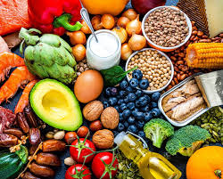

A student once wondered why two people could eat similar meals but have completely different health outcomes. One was energetic and healthy while the other constantly struggled with health issues. The answer was not simply food. It was Nutrition. Food & Nutrition teaches us how food affects growth, health, performance, and overall well-being.
Food & Nutrition is the study of food, nutrients, diet, meal planning, food preparation, and their effects on human health. It helps students understand healthy living, food safety, and the relationship between nutrition and disease prevention.
As an SHS student, you may study topics such as:
Food & Nutrition can lead to careers such as:
Many students think Food & Nutrition is only about cooking. In reality, it combines science, health, business, and hospitality. Food & Nutrition professionals help improve public health, develop food products, manage restaurants, and promote healthy lifestyles.
This is only a small introduction. If you want to understand how programmes connect to university courses, careers, opportunities, and future success, get a copy of:
The guide designed to help students make informed decisions about their future and discover opportunities they may never have considered.